SLAVE HAFTA
Ma marque de mode inspirée de la broderie slave : site codé à la main, visuels créés avec l'IA et réseaux sociaux.
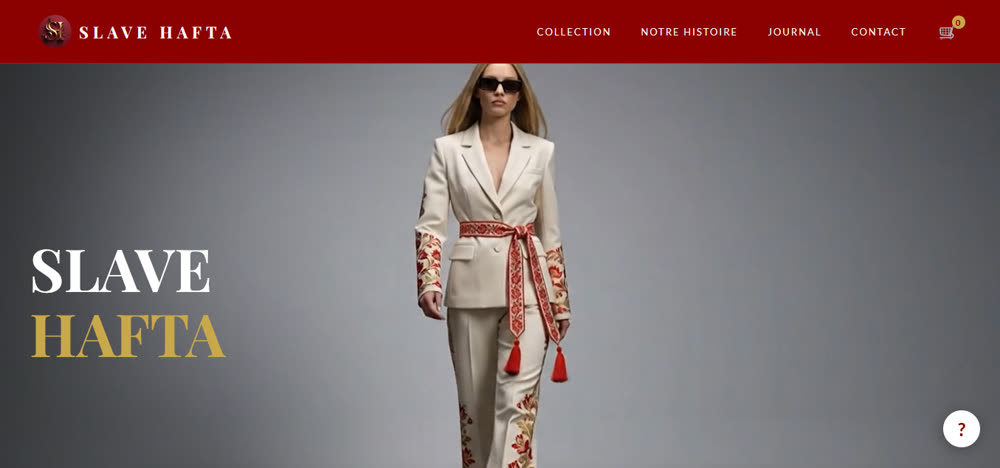
Le projet
Ma propre marque de mode, à l'esthétique « dark feminine », inspirée de la broderie slave et réinterprétée pour la femme moderne. Palette bordeaux et or.
La marque est en phase de pré-lancement : l'objectif est de tester l'intérêt du public et de construire une liste d'attente avant d'ouvrir les précommandes. Cible : les femmes de 20 à 40 ans.
Mon rôle
J'ai tout créé moi-même, de A à Z :
- Identité de marque : logo monogramme SH, palette, ton
- Site codé à la main en HTML/CSS : collection, pages catégories, panier, journal, menu mobile
- Photos et vidéos créées par moi avec l'IA générative
- SEO : audit puis corrections (balises meta, Open Graph, données structurées, sitemap) et suivi Google Analytics
- Comptes Instagram, Pinterest et TikTok, avec un calendrier éditorial sur 3 mois (notoriété, engagement, conversion)
- Business plan et gestion de projet
Outils
- HTML / CSS, GitHub Pages
- IA générative (images) et Google Flow (vidéos)
- Google Analytics 4
- Instagram, Pinterest, TikTok
- Notion, NocoDB
Mes publications sur les réseaux sociaux
Visuels créés par moi avec l'IA générative et publiés sur Instagram, Pinterest et TikTok : logo, moodboard et looks de la collection.
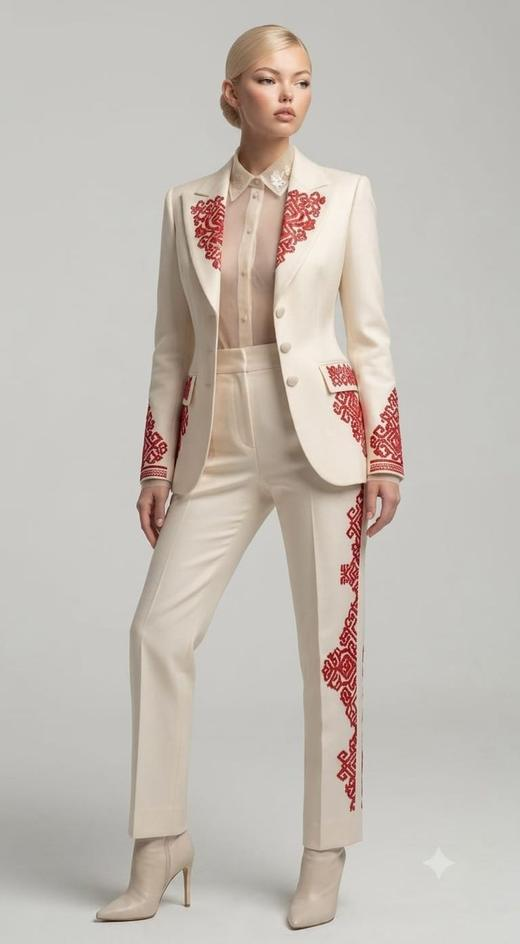
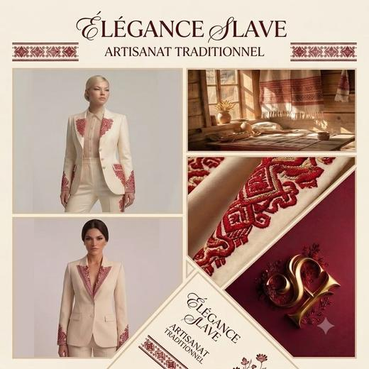
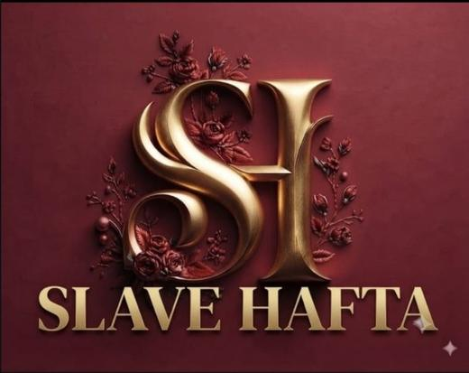
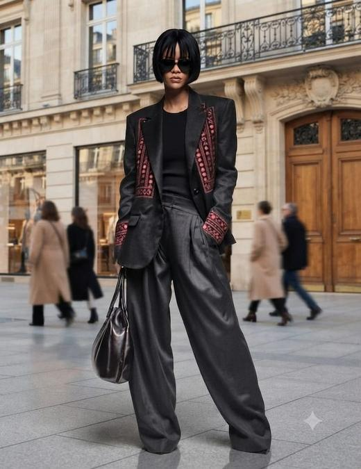
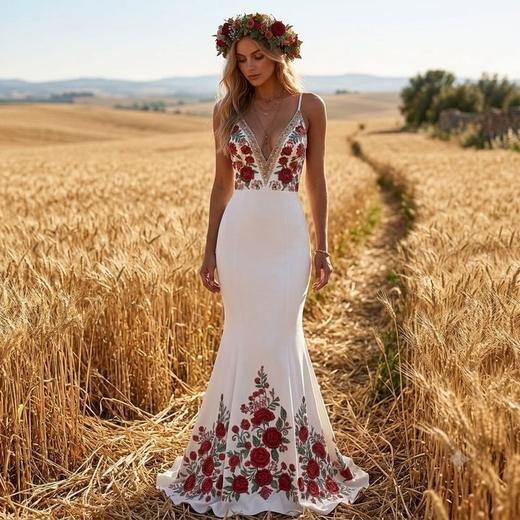
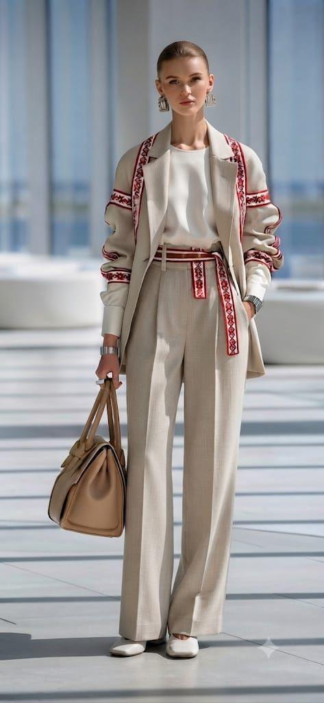
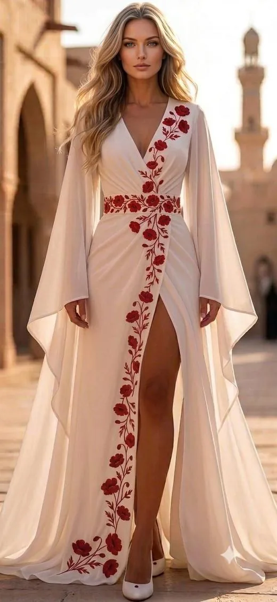
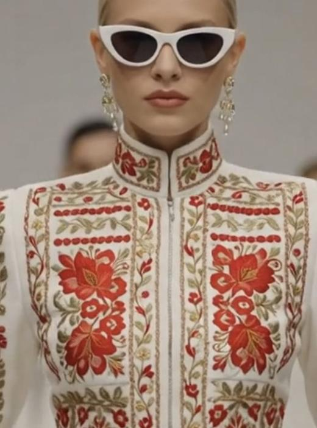
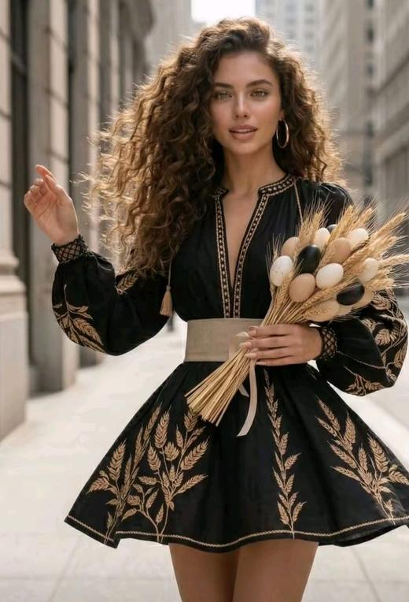
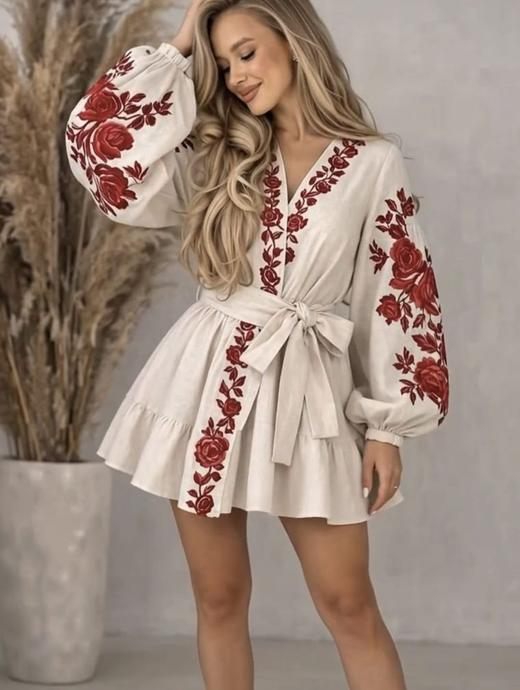